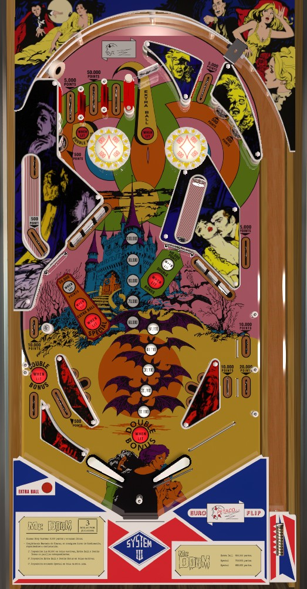

Mr. Evil is a 1-player version, while Mr. Doom is a 4-player version which seems to be much more common. As far as I can tell, they have identical layouts, rules, and scoring.
Each drop target scores 5,000 points and adds 10,000 to the bonus. Completing drop target banks lights neat stuff around the table, including 50,000 points and both captive balls after 1 drop completion and double bonus at the right captive ball after 2 drop completions. Max the bonus out at 150,000 points at the drop targets, then shoot captive balls for 50,000 each until the cows come home. Avoid trying to catch the ball on the right flipper by simply holding it up due to the cut off in/out lane on the right.
The below picture of Mr. Doom's playfield was taken from the VPX recreation by nestorgian.

There are a total of 5 lanes at the top of the table.
The leftmost top lane scores 5,000 points and is lit for Double Bonus after one drop target completion.
The second top lane from left scores 50,000 points, and is the ideal outcome of any plunge.
The third top lane from left scores 5,000 points and is lit for Extra Ball after one drop target completion.
To the right of the three top lanes is a spinner which always scores 100 points per spin. It's pretty hard for the ball to come down the spinner lane off the plunge, but this lane is how you get back to the top of the table to collect lit goodies after completing some drop targets.
Far to the right, detached from the other top lanes, is one more lane that always scores 5,000 points. This rightmost lane will usually have the ball come down the right side of the table, past two standup targets (which score 500) and down the right side lane (which scores 5,000) before kicking off a pin to the left back towards the flippers.
Pop bumpers, of which there are two at the top of the table, always score 100.
At the start of any ball, captive balls are unlit and score 5,000 points. Each drop target down in either bank scores 5,000 points and a bonus advance. Completing a bank of drop targets resets only that bank.
The first time either drop target bank is completed: both captive balls will be lit for 50,000 points, the leftmost top lane and left out lane will be lit for Double Bonus, and the third top lane from left will be lit for Extra Ball.
The second time either drop target bank is completed: the left captive ball will light for Extra Ball and the right captive ball will light for Double Bonus.
The third time either drop target bank is completed: the left captive ball will light for Special.
Use drop targets to build the base bonus, then use captive balls to double the bonus and score as many repeatable 50,000s as possible. If extra ball and Special can be set to a point value, I do not know what that value is.
Both sides of the table bottom include one in lane, one out lane, and one slingshot. Above the out lane are additional rollover lanes; on both sides, these score 10,000 points. The left "upper out lane" curves the ball to the right toward the joint in/out lane entrance; the left in lane does not start vertical, and slants outwards to near the out lane entrance. The right "upper out lane" has a pin below it which can be used to nudge the ball back into play. The left out lane scores 10,000 points, plus Double Bonus after one drop target completion. The left in lane scores 500 points only. The right in and out lane score 10,000 and 20,000 points respectively. The rail between the right in and out lanes is cut off, meaning a right out lane ball can be nudged into the in lane off of yet another pin in the lower right of the game, but a ball rolling up the right flipper can also fall into the out lane as well.
Each bonus advance increases the base bonus by 10,000 instead of the usual 1,000. Bonus advances can only be earned by shooting drop targets. The first bonus advance is not given for free, and it is possible to drain with 0 bonus. Double Bonus is earned by making the leftmost top lane or left out lane after completing 1 bank of drop targets, or by shooting the right captive ball after completing 2 banks of drop targets. Max bonus is 2x 150,000 = 300,000 points. Bonus is a very significant portion of scoring, so take care not to tilt. There is no mid-ball bonus collect, no way to hold the base bonus or multiplier between balls, and no bonus multiplier past 2x.
There is a maximum of 1 extra ball per ball in play, and you cannot chain extra balls; an extra ball cannot be earned on a ball that is itself an extra ball earned in a previous turn.
This game, as with some other solid state games from this era of Spanish pinball, uses score displays with a lot of unlabeled dots, which mean the following: